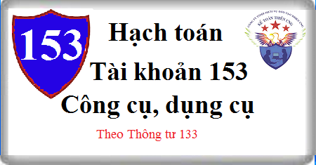

Cách hạch toán Tài khoản 153 theo Thông tư 133, cách hạch toán Công cụ dụng cụ khi mua về, xuất dùng, hạch toán thanh lý nhượng bán Công cụ dụng cụ, hạch toán khi thừa thiếu CCDC …
1. Nguyên tắc kế toán Tài khoản 153 - Công cụ, dụng cụ:
a) Tài khoản này dùng để phản ánh trị giá hiện có và tình hình biến động tăng, giảm các loại công cụ, dụng cụ của doanh nghiệp. Công cụ, dụng cụ là những tư liệu lao động không có đủ các tiêu chuẩn về giá trị và thời gian sử dụng quy định đối với TSCĐ. Vì vậy công cụ, dụng cụ được quản lý và hạch toán như nguyên liệu, vật liệu. Theo quy định hiện hành, những tư liệu lao động sau đây nếu không đủ tiêu chuẩn ghi nhận TSCĐ thì được ghi nhận là công cụ, dụng cụ:
- Các đà giáo, ván khuôn, công cụ, dụng cụ gá lắp chuyên dùng cho sản xuất xây lắp;
- Các loại bao bì bán kèm theo hàng hóa có tính tiền riêng, nhưng trong quá trình bảo quản hàng hóa vận chuyển trên đường và dự trữ trong kho có tính giá trị hao mòn để trừ dần giá trị của bao bì;
- Những dụng cụ, đồ nghề bằng thủy tinh, sành, sứ;
- Phương tiện quản lý, đồ dùng văn phòng;
- Quần áo, giày dép chuyên dùng để làm việc,...
b) Kế toán nhập, xuất, tồn kho công cụ, dụng cụ trên Tài khoản 153 được thực hiện theo giá gốc. Nguyên tắc xác định giá gốc nhập kho công cụ, dụng cụ được thực hiện như quy định đối với nguyên liệu, vật liệu (xem giải thích ở TK 152) (chi tiết các bạn bấm vào chữ "Hạch toán Nguyên vật liệu theo thông tư 133" bên dưới nhé).
c) Việc tính giá trị công cụ, dụng cụ xuất kho cũng được thực hiện theo một trong ba phương pháp sau:
- Phương pháp Nhập trước - Xuất trước;
- Phương pháp giá thực tế đích danh;
- Phương pháp bình quân gia quyền sau mỗi lần nhập hoặc cuối kỳ.
d) Kế toán chi tiết công cụ, dụng cụ phải thực hiện theo từng kho, từng loại, từng nhóm, từng thứ công cụ, dụng cụ. Công cụ, dụng cụ xuất dùng cho sản xuất, kinh doanh, cho thuê phải được theo dõi về hiện vật và giá trị trên sổ kế toán chi tiết theo nơi sử dụng, theo đối tượng thuê và người chịu trách nhiệm vật chất. Đối với công cụ, dụng cụ có giá trị lớn, quý hiếm phải có thể thức bảo quản đặc biệt.
đ) Đối với các công cụ, dụng cụ có giá trị nhỏ khi xuất dùng cho sản xuất, kinh doanh phải ghi nhận toàn bộ một lần vào chi phí sản xuất, kinh doanh.
e) Trường hợp công cụ, dụng cụ, bao bì luân chuyển, đồ dùng cho thuê xuất dùng hoặc cho thuê liên quan đến hoạt động sản xuất, kinh doanh trong nhiều kỳ kế toán thì được ghi nhận vào Tài khoản 242 “Chi phí trả trước” và phân bổ dần vào giá vốn hàng bán hoặc chi phí sản xuất kinh doanh theo từng bộ phận sử dụng.
2. Kết cấu và nội dung Tài khoản 153 - Công cụ, dụng cụ
Bên Nợ:
- Trị giá thực tế của công cụ, dụng cụ nhập kho do mua ngoài, tự chế, thuê ngoài gia công chế biến, nhận góp vốn;
- Trị giá công cụ, dụng cụ cho thuê nhập lại kho;
- Trị giá thực tế của công cụ, dụng cụ thừa phát hiện khi kiểm kê;
- Kết chuyển trị giá thực tế của công cụ, dụng cụ tồn kho cuối kỳ (trường hợp doanh nghiệp kế toán hàng tồn kho theo phương pháp kiểm kê định kỳ).
Bên Có:
- Trị giá thực tế của công cụ, dụng cụ xuất kho sử dụng cho sản xuất, kinh doanh, cho thuê hoặc góp vốn;
- Chiết khấu thương mại được hưởng khi mua công cụ, dụng cụ;
- Trị giá công cụ, dụng cụ trả lại cho người bán hoặc được người bán giảm giá;
- Trị giá công cụ, dụng cụ thiếu phát hiện khi kiểm kê;
- Kết chuyển trị giá thực tế của công cụ, dụng cụ tồn kho đầu kỳ (trường hợp doanh nghiệp kế toán hàng tồn kho theo phương pháp kiểm kê định kỳ).
Số dư bên Nợ: Trị giá thực tế của công cụ, dụng cụ tồn kho cuối kỳ.
3. Cách hạch toán Công cụ dụng cụ theo Thông tư 133:
3.1. Trường hợp doanh nghiệp hạch toán hàng tồn kho theo phương pháp kê khai thường xuyên.
a) Mua công cụ, dụng cụ nhập kho, nếu thuế GTGT đầu vào được khấu trừ thì giá trị của công cụ, dụng cụ được phản ánh theo giá mua chưa có thuế GTGT, căn cứ vào hóa đơn, phiếu nhập kho và các chứng từ có liên quan, ghi:
Nợ TK 153 - Công cụ, dụng cụ (giá chưa có thuế GTGT )
Nợ Tài khoản 133 Thuế GTGT được khấu trừ (số thuế GTGT đầu vào) (1331)
Có các TK 111, 112, 141, 331,... (tổng giá thanh toán).
Nếu thuế GTGT đầu vào không được khấu trừ thì giá trị công cụ, dụng cụ mua vào bao gồm cả thuế GTGT.
b) Trường hợp khoản chiết khấu thương mại hoặc giảm giá hàng bán nhận được sau khi mua công cụ, dụng cụ (kể cả các khoản tiền phạt vi phạm hợp đồng kinh tế về bản chất làm giảm giá trị bên mua phải thanh toán) thì kế toán phải căn cứ vào tình hình biến động của công cụ, dụng cụ để phân bổ số chiết khấu thương mại, giảm giá hàng bán được hưởng dựa trên số công cụ, dụng cụ còn tồn kho hoặc số đã xuất dùng cho hoạt động sản xuất kinh doanh:
Nợ các Tài khoản 111, 112, 331,....
Có TK 153 - Công cụ, dụng cụ (nếu công cụ, dụng cụ còn tồn kho)
Có TK 154 - Chi phí SXKD dở dang (nếu công cụ, dụng cụ đã xuất dùng cho sản xuất kinh doanh)
Có TK 642 - Chi phí quản lý kinh doanh (nếu công cụ, dụng cụ đã xuất dùng cho hoạt động bán hàng, quản lý doanh nghiệp)
Có TK 242 - Chi phí trả trước (nếu công cụ, dụng cụ đã xuất dùng nhưng chưa phân bổ hết vào chi phí sản xuất kinh doanh)
Có TK 632 - Giá vốn hàng bán (nếu sản phẩm do công cụ, dụng cụ đó cấu thành đã được xác định là tiêu thụ trong kỳ)
Có TK 133 - Thuế GTGT được khấu trừ (1331) (nếu có).
c) Trả lại công cụ, dụng cụ đã mua cho người bán, ghi:
Nợ Tài khoản 331 Phải trả người bán
Có TK 153 - Công cụ, dụng cụ (giá trị công cụ, dụng cụ trả lại)
Có TK 133 - Thuế GTGT được khấu trừ (nếu có) (thuế GTGT đầu vào của công cụ, dụng cụ trả lại cho người bán).
d) Phản ánh chiết khấu thanh toán được hưởng (nếu có), ghi:
Nợ TK 331 - Phải trả cho người bán
Có TK 515 - Doanh thu hoạt động tài chính
đ) Xuất công cụ, dụng cụ sử dụng cho sản xuất, kinh doanh:
- Nếu giá trị công cụ, dụng cụ, bao bì luân chuyển, đồ dùng cho thuê liên quan đến một kỳ kế toán được tính vào chi phí sản xuất, kinh doanh một lần, ghi:
Nợ các Tài khoản 154, 642
Có TK 153 - Công cụ, dụng cụ.
- Nếu giá trị công cụ, dụng cụ, bao bì luân chuyển, đồ dùng cho thuê liên quan đến nhiều kỳ kế toán được phân bổ dần vào chi phí sản xuất, kinh doanh, ghi:
+ Khi xuất công cụ, dụng cụ, bao bì luân chuyển, đồ dùng cho thuê, ghi:
Nợ TK 242 Chi phí trả trước
Có TK 153 - Công cụ, dụng cụ.
+ Khi phân bổ vào chi phí sản xuất, kinh doanh cho từng kỳ kế toán, ghi:
Nợ các TK 154, 642… (giá trị phân bổ dần của công cụ dụng cụ xuất dùng cho hoạt động sản xuất, kinh doanh
Nợ TK 632 – Giá vốn hàng bán (giá trị phân bổ dần của công cụ dụng cụ xuất dùng cho thuê)
Có TK 242 - Chi phí trả trước.
- Ghi nhận doanh thu về cho thuê công cụ, dụng cụ, ghi:
Nợ các TK 111, 112, 131,...
Có TK 511 - Doanh thu bán hàng và cung cấp dịch vụ (5113)
Có TK 3331 Thuế GTGT phải nộp (33311).
- Nhận lại công cụ, dụng cụ cho thuê, ghi:
Nợ TK 153 - Công cụ, dụng cụ (1533)
Có TK 242 - Chi phí trả trước (giá trị còn lại chưa tính vào chi phí).
Xem thêm: Cách tính phân bổ công cụ dụng cụ
g) Đối với công cụ, dụng cụ nhập khẩu:
- Khi nhập khẩu công cụ, dụng cụ, ghi:
Nợ TK 153 - Công cụ, dụng cụ
Có TK 331 - Phải trả cho người bán
Có TK 3331 - Thuế GTGT phải nộp (33312) (nếu thuế GTGT đầu vào của hàng nhập khẩu không được khấu trừ)
Có TK 3332- Thuế tiêu thụ đặc biệt (nếu có).
Có TK 3333 - Thuế xuất, nhập khẩu (chi tiết thuế nhập khẩu)
Có TK 33381 - Thuế bảo vệ môi trường.
- Nếu thuế GTGT đầu vào của hàng nhập khẩu được khấu trừ, ghi:
Nợ TK 133 - Thuế GTGT được khấu trừ
Có TK 3331 - Thuế GTGT phải nộp (33312).
h) Khi kiểm kê phát hiện công cụ, dụng cụ thừa, thiếu, mất, hư hỏng, kế toán xử lý tương tự như đối với nguyên vật liệu (xem TK 152).
Chi tiết TK 152 xem tại đây:
Hạch toán Nguyên vật liệu theo thông tư 133
Hạch toán Nguyên vật liệu theo thông tư 133
i) Đối với công cụ, dụng cụ không cần dùng:
- Khi thanh lý, nhượng bán công cụ, dụng cụ kế toán phản ánh giá vốn ghi:
Nợ TK 632 - Giá vốn hàng bán
Có TK 153 - Công cụ, dụng cụ.
- Kế toán phản ánh doanh thu bán công cụ, dụng cụ ghi:
Nợ các TK 111, 112, hoặc Tài khoản 131
Có TK 511 - Doanh thu bán hàng và cung cấp dịch vụ (5118)
Có TK 333 - Thuế và các khoản phải nộp Nhà nước.
3.2. Trường hợp doanh nghiệp hạch toán hàng tồn kho theo phương pháp kiểm kê định kỳ.
a) Đầu kỳ kế toán, kết chuyển trị giá thực tế của công cụ, dụng cụ tồn kho đầu kỳ, ghi:
Nợ TK 611 - Mua hàng
Có TK 153 - Công cụ, dụng cụ.
b) Cuối kỳ kế toán, căn cứ vào kết quả kiểm kê xác định trị giá công cụ, dụng cụ tồn kho cuối kỳ, ghi:
Nợ TK 153 - Công cụ, dụng cụ
Có TK 611 - Mua hàng.
---------------------------
Chúc các bạn làm tốt công việc kế toán.
Các bạn muốn học cách hoàn thiện sổ sách, tính thuế - Quyết toán thuế, lập Báo cáo tài chính trực hành trên chứng từ thực tế, chuyên sâu, có thể tham gia: Lớp học thực hành kế toán tại Kế toán Diệu Tâm.
Các bạn muốn học cách hoàn thiện sổ sách, tính thuế - Quyết toán thuế, lập Báo cáo tài chính trực hành trên chứng từ thực tế, chuyên sâu, có thể tham gia: Lớp học thực hành kế toán tại Kế toán Diệu Tâm.
